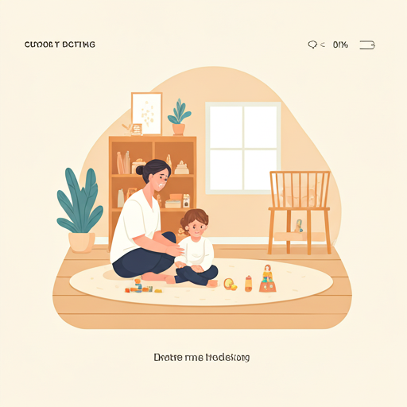
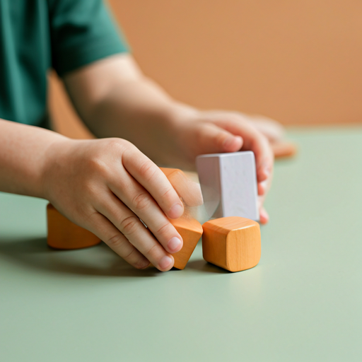

我們的專業服務
為孩子量身打造的
為孩子量身打造的
成長應援計畫
我們致力於用最溫柔的方式，陪伴家長解決育兒難題，讓職能治療融入日常生活，使「教養」變得簡單而純粹。

全方位服務項目
我們提供以下四種核心服務，針對不同階段的發展需求提供支援。

感覺統合與處理
針對觸覺敏感、平衡失調等感覺處理問題，提供個人化的感覺餐建議與環境調整策略。
包含項目：
感覺發展量表評估、感覺統合遊戲活動、居家環境建置建議

看見孩子的
一點點改變
來自家長們的最真實回饋，見證了培兒蒂所提倡的「簡單即是美」的育兒力量。
4.9 / 5.0